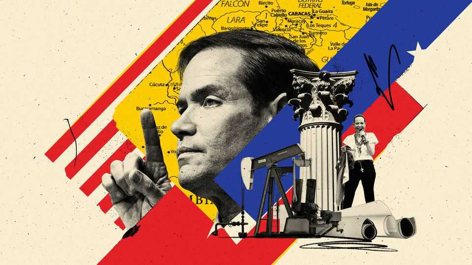

America really might restore democracy to Venezuela
Thank Marco Rubio, but beware the caprice of his boss

Aug 13th 2026
When President Donald Trump sent American special forces to snatch Venezuela’s dictator, Nicolás Maduro, in January, it did not sound as though restoring democracy was his priority. He boasted endlessly about how he now controlled Venezuela’s oil, while barely mentioning the country’s political future. He installed as interim president Delcy Rodríguez, the deposed despot’s dismal deputy. Many worried that without a strong American commitment to a democratic transition, the old, brutal kleptocracy would carry on.
Yet the prospects for democracy in Venezuela seem to be improving. This is not because Mr Trump has suddenly developed a passion for the subject. It is because his secretary of state, Marco Rubio, who really does care about ending left-wing dictatorships in Latin America, has been granted a reasonably free hand to use America’s huge influence in pursuit of that goal.
A first round of negotiations between Venezuela’s regime and figures from the opposition ended on August 12th with a modest agreement to begin a process of judicial reform, including of the Supreme Court. Our reporting finds reasons for optimism. Further talks could produce, by December, reforms that could allow for fair elections.
None of this would be happening without pressure from the United States. Mr Rubio has been deeply involved, speaking directly to the opposition’s lead negotiator, Dinorah Figuera. Her team moves around Caracas in American cars, with American security, and sleeps in America’s chosen hotel.
Having seen both their liberty and the economy shrink under Mr Maduro, the vast majority of Venezuelans would love the transition to democracy to succeed. This would also benefit Mr Trump. He wants to see Venezuela’s dilapidated oilfields boom; only under democracy and the rule of law will the country be stable enough to attract the necessary investment.
Problems abound, however. The ruling clique has often broken promises to allow fair elections. An opposition directed by Mr Rubio will be accused of being an American stooge. It does not help that ordinary Venezuelans, many of them earthquake-battered, have yet to see much benefit from the oil revenues controlled by the United States. If negotiations drag on, the regime will have more chances to escape its commitments and the opposition may be weakened.
So speed matters. America should insist that Venezuela will hold a presidential election in 2027. That is more than enough time; after the fall of the Berlin Wall, several former Soviet vassal states organised free elections within a year. In the meantime the United States must disclose how much oil money it has collected, how much has been returned to Venezuela, and which sanctions impede disbursement. An elected government should take full control of the oil revenues from its first day in office.
The opposition leader, María Corina Machado, must also be allowed to return home quickly. Mr Rubio may want to keep her away from the negotiating table in order to make it easier to talk to the regime, but keeping her in exile is short-sighted. The regime needs confidence that any deal also binds Ms Machado, even if she negotiates through proxies, as she may well be Venezuela’s next president. Otherwise she could repudiate its possible terms, such as safe exile for regime figures (though she insists she is not out for revenge).
Ms Machado’s presence in Venezuela would also help allay another worry: Mr Trump’s caprice. He has spoken of making Venezuela the 51st state, and sometimes suggests that its oil wealth belongs to the United States. For now, he is allowing Mr Rubio to pursue more noble aims. If he changes his mind, the only thing that might save Venezuelan democracy is Ms Machado’s ability to summon huge crowds to the streets. ■
Editor’s note (August 13th): This article has been updated.